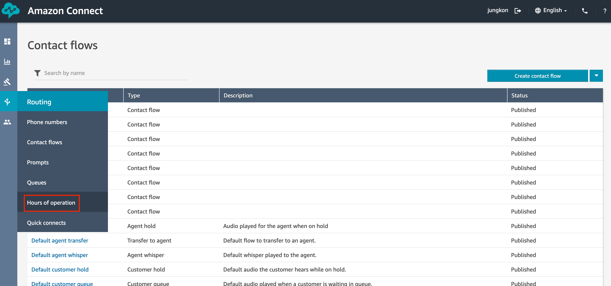
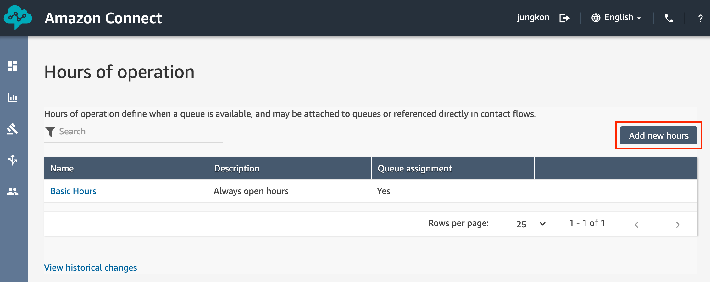
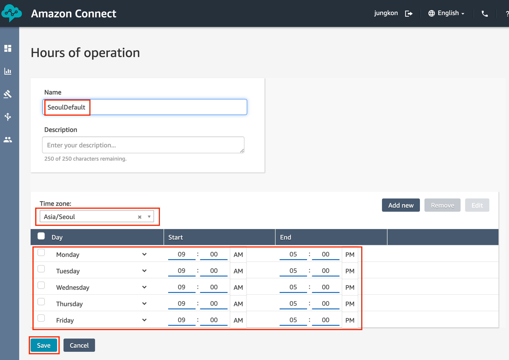
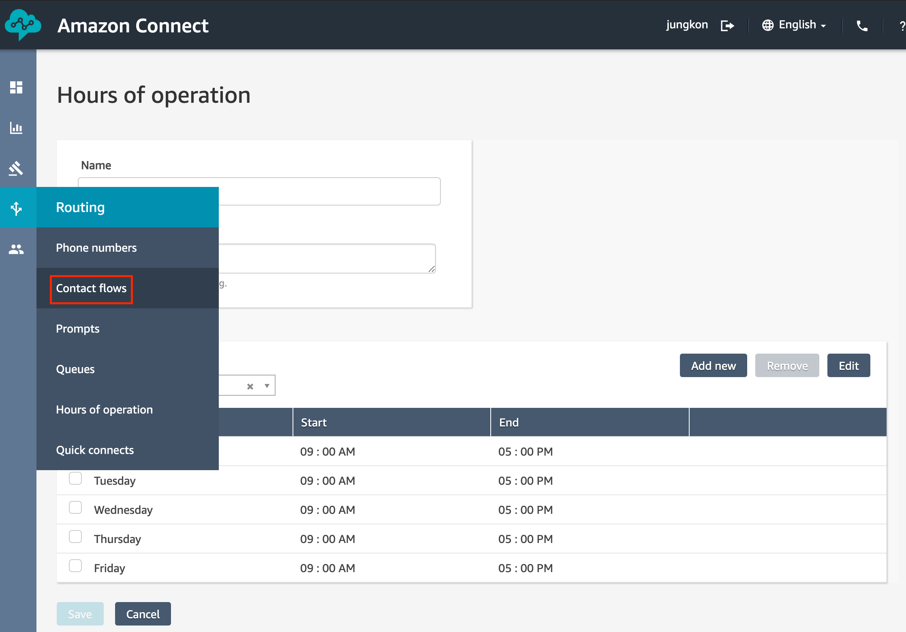
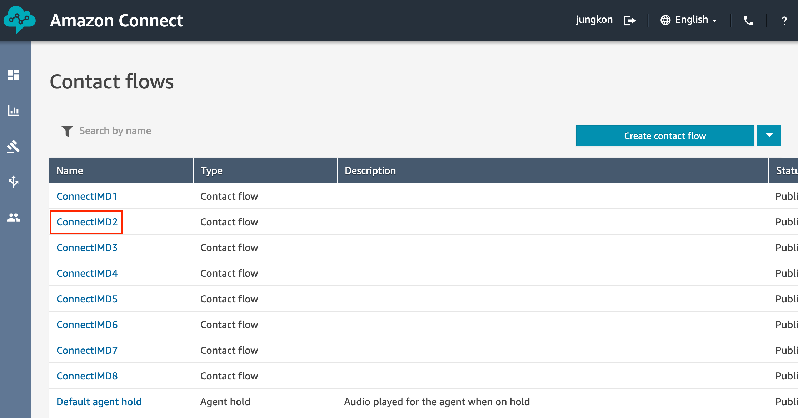
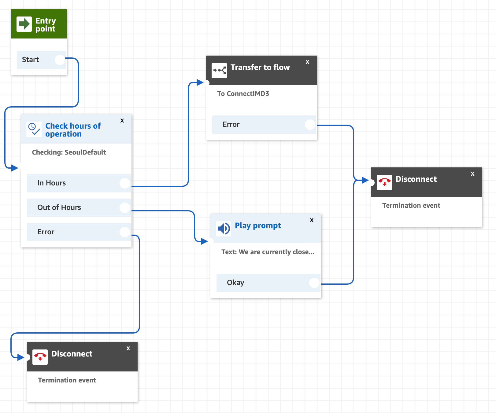
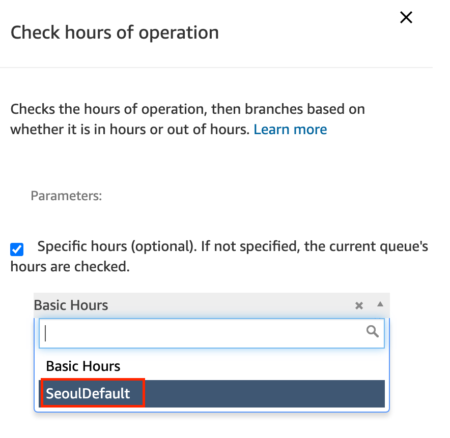
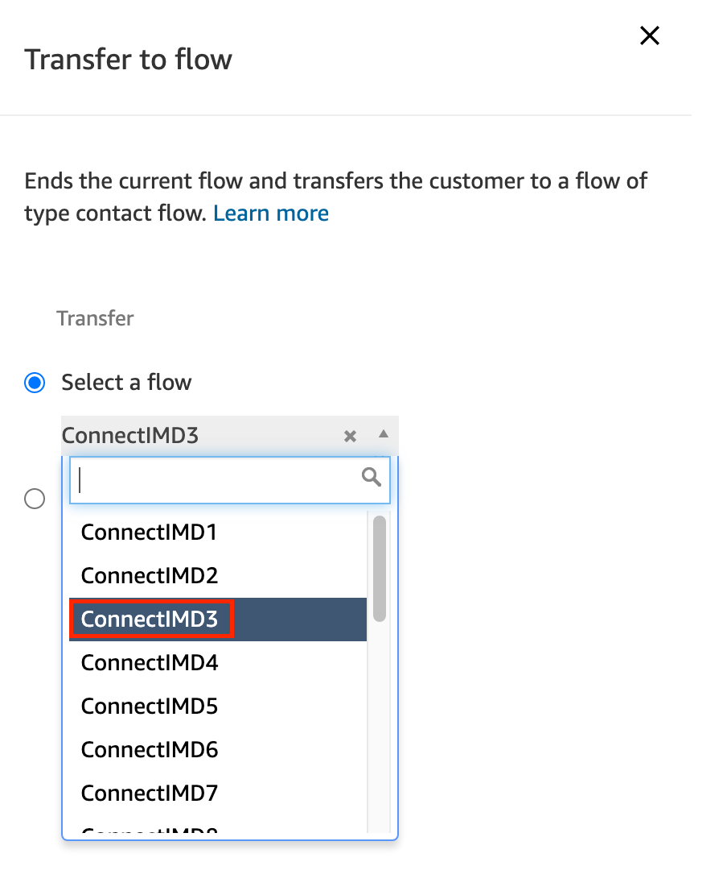
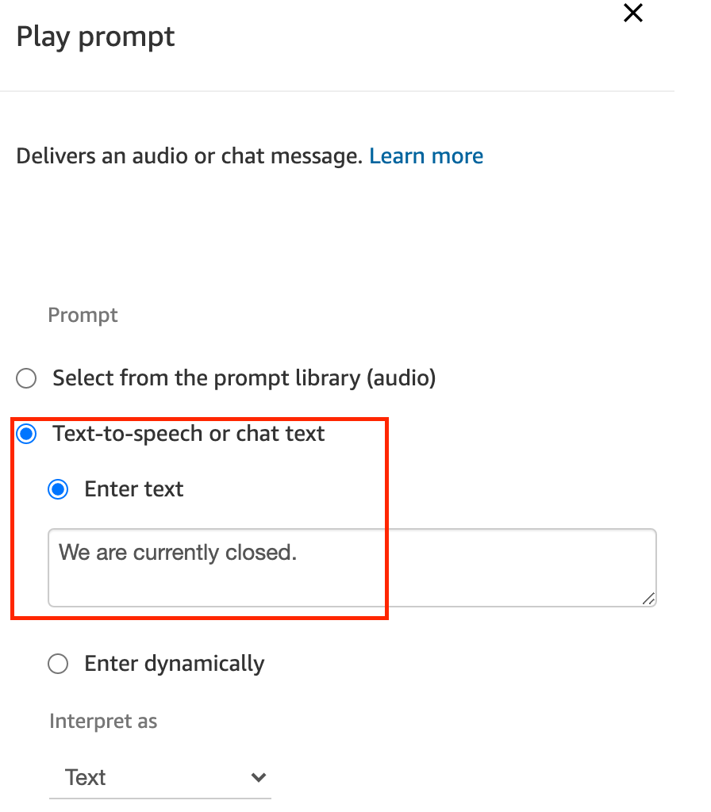

콜센터의 업무 시간을 설정하고 Contact Flow 에서 해당 업무 시간에만 상담 전화를 받도록 시나리오를 정의합니다.
아래 화면과 같이 Hours of operation 메뉴로 이동합니다. 
Basic Hours 업무 시간 설정이 이미 있습니다만, 여기서는 새로 업무 시간을 만들어보겠습니다. Add new hours 버튼을 클릭합니다. 
아래 화면과 같이 업무 시간을 수정합니다. 이 예제에서는 간단히 토요일, 일요일만 삭제하고 TimeZone을 Asia/Seoul로 설정했습니다. Save 버튼을 클릭하여 설정을 저장합니다. 
업무 시간을 본 실습을 진행하는 시간을 포함하도록 설정해야합니다. 그렇지 않으면 테스트 시 진행이 안될 수 있습니다.
다시 Contact flows 메뉴로 이동합니다. 
ConnectIMD2 Contact Flow 를 클릭하여 편집을 시작합니다. 
전체 Contact Flow 는 다음과 같습니다. 계속해서 아래 설명대로 각각의 Command Block 을 클릭하여 설정하고 파란색 화살표대로 연결해줍니다. 
Check hours of operation Command Block 을 왼쪽 리스트 중 Branch 메뉴에서 Drag&Drop 으로 편집 화면으로 가져옵니다. 위에서 새로 만든 업무 시간(SeoulDefault)을 선택하여 설정합니다. Save 버튼을 클릭하여 설정을 저장합니다. 
Transfer to flow Command Block 을 왼쪽 리스트 중 Terminate / Transfer 메뉴에서 Drag&Drop 으로 편집 화면으로 가져옵니다. 인입 전화가 해당 업무 시간내일 경우 다음 Contact Flow (ConnectIMD3) 로 시나리오를 진행하도록 합니다. Save 버튼을 클릭하여 설정을 저장합니다. 
Play prompt Command Block 을 왼쪽 리스트 중 Interact 메뉴에서 Drag&Drop 으로 편집 화면으로 가져옵니다. 업무 시간에 해당하지 않을 경우 해당 멘트를 출력한 이후 통화를 종료하도록 연결합니다. Text 내용은 아래 화면에서 복사해서 붙여넣을 수 있습니다. 설정한 이후 아래 Save 버튼을 클릭해서 설정을 저장합니다.
We are currently closed.

모든 연결이 제대로 설정되었는지 확인하고, Save 버튼을 클릭하여 저장하고, Publish 버튼을 클릭하여 발행 합니다.
업무 시간 관련 시나리오 작성을 완료했습니다. 다음 장에서는 인입 전화의 전화번호를 기준으로 사용자를 인식하고 대응하는 시나리오를 구성해봅니다.